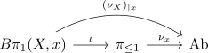

orientable manifold and trivial orientation character
Proposition
Let \(M\) be an \(n\)-dimensional connected manifold
TFAE:
- $X$ is orientable
- orientation character $\omega_{X}$ is trivial
Proof
1) $\implies$ 2)
using <4.2.11> $X$ is orientable if and only if $\nu_{X}$ is isomorphic to $\overline{\mathbb{Z}}$. Note that the orientation character is given by the homomorphism for the automorphism groups
\begin{displaymath}
\begin{tikzcd}
B\pi_{X,x} \arrow[]{r}{} \arrow[]{r}{} & \pii_{\leq 1}(X) \arrow[]{r}{\overline{\mathbb{Z}}}& \mathrm{Ab}
\end{tikzcd}
\end{displaymath}where the constant functor determines the zero morphism
Hence the composition is trivial
2) $\implies$ 1)
If the $\omega_{X}$ is trivial, then
\begin{align*}
(\nu_{X})_{\vert x} \cong \overline{\mathbb{Z}}
\end{align*}
where $\nu_{X})_{\vert x}$ is given by

This then follows by